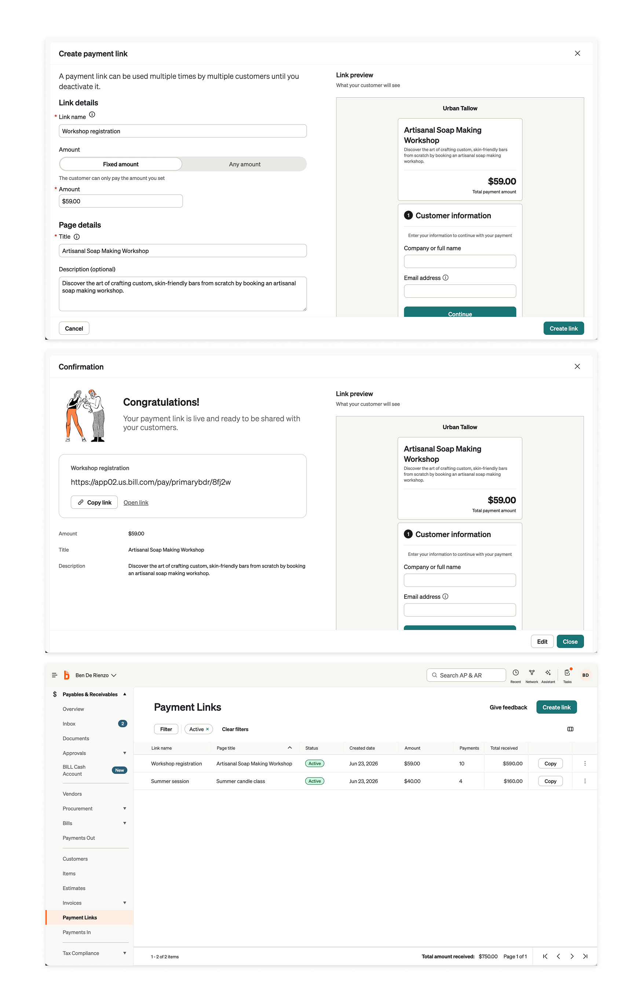

Not every payment needs an invoice. Payment Links gave users a reusable, shareable way to collect payment for a class, a product, a workshop, or a donation — without creating paperwork for every transaction.
The product was built around invoices. That's the right tool for a consulting engagement. It's the wrong tool for a yoga class.
To get paid, users had to create an invoice — one per customer, every time. That model assumes a named recipient and a formal transaction. A lot of real payments don't work that way.
A medical clinic collecting a copay. A nonprofit accepting donations. An instructor charging $20 per class. These users were either forcing informal payments into invoice workflows — creating unnecessary friction — or going outside the product entirely to collect payment.
"Where invoices are one-to-one, a payment link works one-to-many: one link, unlimited customers, no setup required each time."
For anyone selling the same thing to multiple people, or taking payment in person, the product simply didn't fit. Payment Links was a chance to serve those use cases and keep more payment volume on platform.
Four distinct use cases the invoice model couldn't serve — each pointing at the same solution.
Competitive research confirmed the direction: Square, Stripe, and PayPal all offered payment links, but had layered in complexity over time. Starting lean meant a faster path to adoption and a cleaner experience for both the user and the payer.
The core tension: this needed to live inside an invoice-first product without feeling like an afterthought — while serving a genuinely different use case.
Fixed and open amounts. Payment Links supports both user-defined fixed prices and open amounts the payer fills in themselves. Fixed amounts cover workshops, products, and services. Open amounts unlock donation flows. This single decision significantly expanded the range of use cases without complicating the creation flow.
Reusability as the core model shift. Unlike invoices, a payment link isn't consumed when used. One link works for unlimited customers, indefinitely — until the user decides otherwise. This was the fundamental shift: from one-to-one to one-to-many.
A customizable link page. Users can edit the title, description, and imagery that appears on the payment page — so the payer lands on something that represents what they're buying, not just a generic checkout.
Payer trust without starting from scratch. A key risk was payer-side trust: someone receiving a link from a business they know, but landing on an unfamiliar checkout. Rather than designing a new checkout surface, we extended the existing guest payment experience — a tested surface that internal teams and customers already trusted. This reduced design risk and accelerated implementation.

Shareability. A link is only useful if it's easy to get in front of customers. At launch: copy link, accessible directly from the Payment Links grid and the link detail page. QR codes, SMS, and embeddable payment pages are on the roadmap.
Performance tracking built in. Each link surfaces the number of payments received and unique customers — without needing to pull a report. Users can manage a portfolio of links and understand which are driving volume at a glance.
Shipping lean was a deliberate call. Starting from what competitors had built over years wasn't the right starting line.
Several features were deliberately deferred from v1: one-time-use links that auto-expire, use limits, and expiration dates — useful for price campaigns and limited offers. These are planned additions, not things the launch feature couldn't do without.
The sharing surface is where I'd invest more upfront if doing it again. Users need easy ways to get links in front of customers in person — QR codes especially. Earlier investment there would have unlocked more in-person use cases from day one.
Sometimes the most valuable design work is recognizing what an existing mental model can't do — and building something new alongside it rather than bending it further.